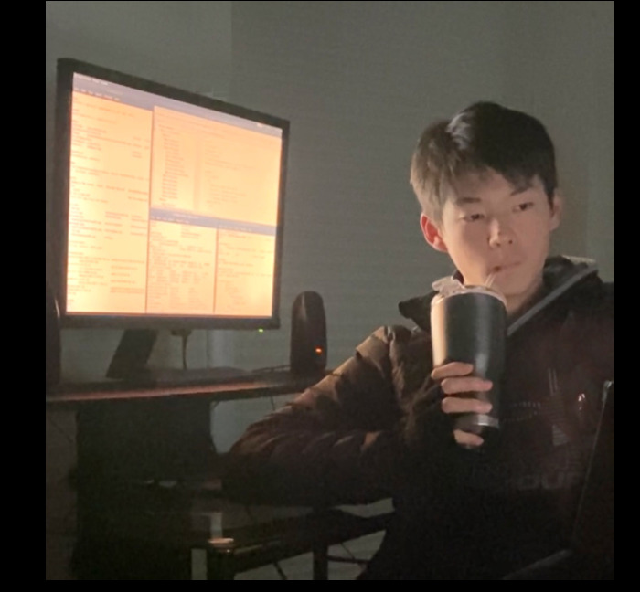

Alexander Chen / AlxV07



Hello! My name is Alexander Chen: I'm years old and am very interested in Computer Science.
I've been programming for ~ years now, developing my skills mainly in
Java, Python, Lisp, & JavaScript (Btw I use Arch ;D) I've been teaching myself in a variety of fields, from
application development to machine learning. Recently, I've been diving deeper into in Computational Linguistics & NLP.
I live in Dallas, Texas, and homeschool with the Mother of Divine Grace School.
I compete in competitive programming, speech and debate, and varsity ice hockey. My Myers-Briggs personality is INTJ,
and I have a little sister who plays AAA Ice Hockey on the Dallas Stars Elite boys team
(Her YouTube Channel).
In my free time, I enjoy solving logic puzzles, playing chess, and learning Latin.
This past week I've been in Ft. Worth competing in the NCFCA National Mixer hosted there this year.
It was a great experience; my partner and I competed against some of the best teams in our region
whilst also getting to debate teams from other regions as well. We advanced to elimination rounds
again but were eliminated in Double-Octofinals.
Even still, it was a great tournament overall - I've developed a lot and have learned a ton since my
last tournament. Both my partner and I were awarded 30 speaker points in separate rounds (the maximum
number of points available) for the first time! It was such a great experience to debate against
everyone at Ft. Worth - we really enjoyed it, and we're looking forward to the tournaments in the future!
Kind of note-worthy news! I changed one character in my username everywhere!
From "AlxV05" to "AlxV07", links & profiles which could be updated have been updated. Why?
It goes back to why I have my username in the first place.
I first found out I needed my own username ~5 years ago (10 yrs old) while making
some random account I don't have access to anymore. I came up with
"Alx" quick enough, decided I liked version numbers so added the "V0" soon after,
and finally I just had to choose the last character. 5 sounded cool ("al-ks-vee-oh-five").
Nothing special about 5; just sounded cool.
Well I'm mature now ;) and I'd prefer to have my markers have more meaning than just
it "sounding cool". So I looked at my username: Alx still fits; three-char compact
name-like tags are always nice to have around. Second part: the version identifier - I
think I'll keep it, I'm getting updated :D So that means I need to choose a number greater
than 5. 7's the only single-digit number greater than 0 that has two syllables (unique).
I'm also Catholic, and the number 7 symbolises some significant topics: perfection, the
7 days of creation, the 7 cardinal virtues, and many more references from the Bible.
After updating everything it feels kinda nice. It's always good to have a switch-up
every now and then (as long as it isn't too drastic nor does it cause any problems).
Well, I guess till next time. Bye!
Hello! This is my first blog post (Yay!) What does one do with a blog? I'm not entirely sure, but I think I'm supposed to post about things that have been happening. So here are some normal things I've been up to recently: